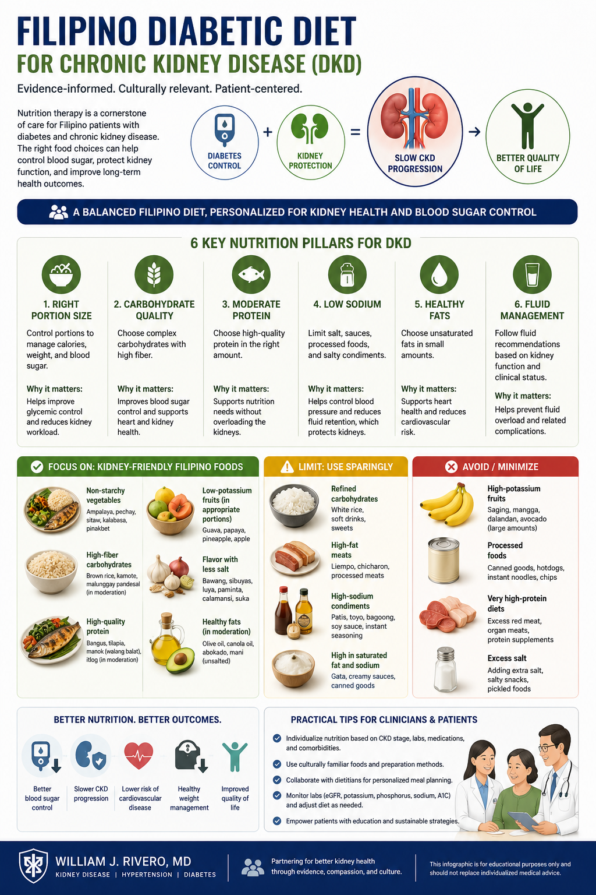
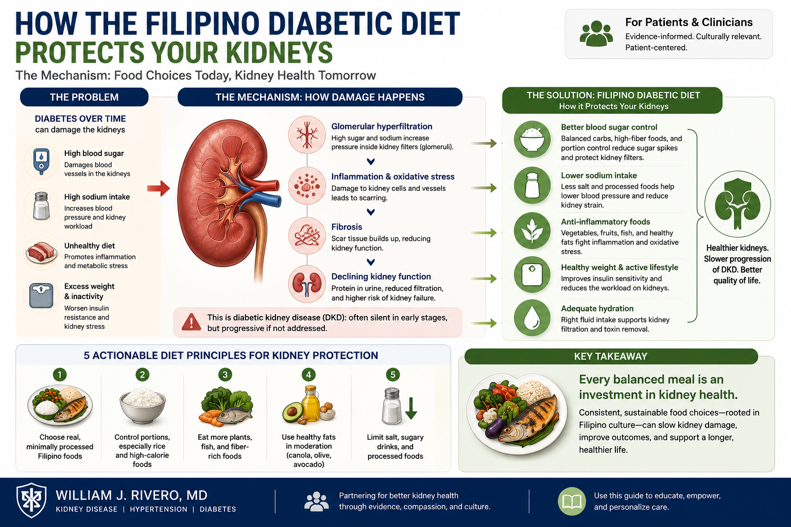
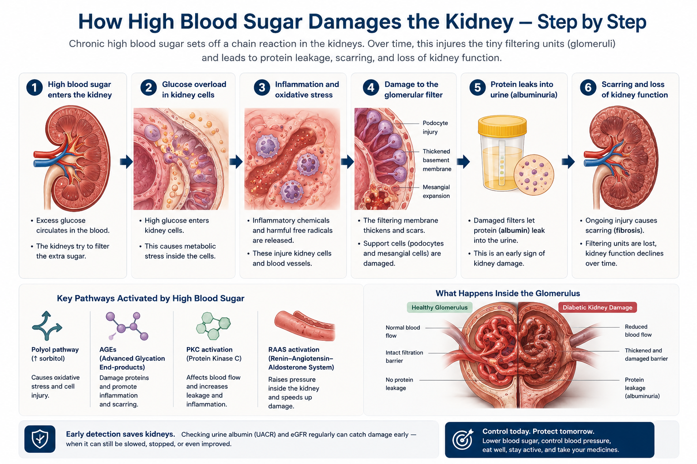
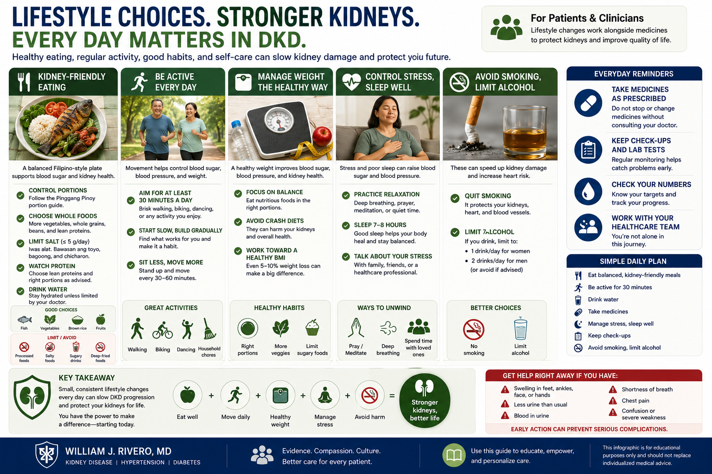

The Two Organs That Suffer Most from DiabetesAng Dalawang Organo na Pinaka-apektado ng DiabetesAng Duha ka Organo nga Labing Naaapektuhan sa Diabetes Ing Dalawang Organo a Pinaka-apektado ning Diabetes

The DKD timeline is largely reversible or stoppable in the early stages. Microalbuminuria — detectable on a simple UACR urine test — is the critical early warning window.Ang timeline ng DKD ay karaniwang nare-reverse o matitigil sa maagang yugto. Ang microalbuminuria — matatukoy sa simpleng UACR urine test — ang kritikal na maagang babala.Ang timeline sa DKD kay kadaghanan mabawi o mapugngan sa sayo pang yugto. Ang microalbuminuria — matukod sa simpleng UACR urine test — mao ang kritikal nga sayo nga babala. Ing timeline ning DKD ya karaniwang nare-reverse o matitigil king maagang yugto. Ing microalbuminuria — matatukoy king simpleng UACR urine test — ing kritikal a maagang babala.
Diabetic kidney disease (DKD) is the leading cause of kidney failure in the Philippines — and the world. Approximately 1 in 3 people with Type 2 diabetes will develop significant kidney involvement. The insidious part: kidney damage begins years before any symptoms appear. This guide helps you understand the process, recognize warning signs, and take control.Ang diabetic kidney disease (DKD) ang nangungunang sanhi ng pagpalya ng bato sa Pilipinas — at sa buong mundo. Humigit-kumulang 1 sa 3 na taong may Type 2 diabetes ang magkakaroon ng malaking epekto sa bato. Ang nakakatakot na bahagi: nagsisimula ang pinsala sa bato ng ilang taon bago lumabas ang anumang sintomas. Tinutulungan kayo ng gabay na ito na maunawaan ang proseso, makilala ang mga babala, at makontrol ang sitwasyon.Ang diabetic kidney disease (DKD) mao ang nangunang hinungdan sa pagpakyas sa kidney sa Pilipinas — ug sa tibuok kalibutan. Mga 1 sa 3 nga tawo nga adunay Type 2 diabetes ang makasinati og dakong epekto sa kidney. Ang kahadlok niini: nagsugod ang kadaot sa kidney og daghang tuig sa wala pa moanhi ang bisan unsang sintomas. Kining giya motabang kaninyo nga masabtan ang proseso, mailhan ang mga babala, ug makontrol ang sitwasyon. Ing diabetic kidney disease (DKD) ing nangungunang sanhi ning pagpalya ning batu king Pilipinas — at king buong mundo. Humigit-kumulang 1 king 3 a taong atin Type 2 diabetes ing magkakaroon ning malaking epekto king batu. Ing nakakatakot a bahagi: nagsisimula ing pinsala king batu ning ilang banua bago lumabas ing anumang sintomas. Tinutulungan kayu ning gabay a ini a maunawaan ing proseso, makilala ing deng babala, at makontrol ing sitwasyon.
Why does diabetes harm kidneys?Bakit nakakasama ang diabetes sa mga bato?Ngano nga makadaot ang diabetes sa kidney? Bakit nakakasama ing diabetes king deng batu?
Chronically elevated blood sugar damages the delicate filtration membrane of the kidney. This leads to protein leakage, scarring, and progressive loss of filtering units — a process that unfolds silently over 10–15 years.Ang talamak na mataas na asukal sa dugo ay nakakasama sa maselang filtration membrane ng bato. Nagdudulot ito ng pagtagas ng protina, pag-ukit ng peklat, at progresibong pagkawala ng mga yunit ng pagsasala — isang prosesong nagaganap nang tahimik sa loob ng 10–15 taon.Ang kronikong taas nga asukal sa dugo makadaot sa malusot nga filtration membrane sa kidney. Kini naghimong pagtulo sa protina, peklat, ug unti-unting pagkawala sa mga yunit sa pagsala — usa ka proseso nga nagaganap nga hilom sa 10–15 ka tuig. Ing talamak a matas a asukal king daya ya nakakasama king maselang filtration membrane ning batu. Nagdudulot ini ning pagtagas ning protina, pag-ukit ning peklat, at progresibong pagkaala ning deng yunit ning pagsasala — metung a prosesong nagaganap nang tahimik king loob ning 10–15 banua.
The good newsAng magandang balitaAng maayong balita Ing magandang balita
DKD is one of the most preventable forms of kidney disease. With tight glucose control, blood pressure management, and the right medications, progression can be dramatically slowed — or even halted.Ang DKD ay isa sa mga pinaka-mapipigilan na uri ng sakit sa bato. Sa mahigpit na kontrol ng glucose, pamamahala ng presyon ng dugo, at tamang gamot, ang pag-usad ay maaaring lubhang mapabagal — o kahit mapahinto.Ang DKD usa sa labing mapugngan nga matang sa sakit sa kidney. Sa higpit nga kontrol sa glucose, pagdumala sa presyon sa dugo, ug tamang medisina, ang pag-uswag mahimong mahinay pag-ayo — o bisan mapugngan. Ing DKD ya metung king deng pinaka-mapipigilan a uri ning sakit king batu. King mahigpit a kontrol ning glucose, pamamahala ning presyon ning daya, at tamang gamut, ing pag-usad ya maaaring lubhang mapabagal — o kahit mapahinto.
How High Blood Sugar Damages the Kidney — Step by StepPaano Nakakasama ang Mataas na Asukal sa Dugo sa Bato — Hakbang sa HakbangUnsaon sa Taas nga Asukal sa Dugo Pagdaot sa Kidney — Lakang sa Lakang Paano Nakakasama ing Matas a Asukal king Daya king Batu — Hakbang king Hakbang
Understanding the mechanism helps you appreciate why every intervention your doctor recommends matters.Ang pag-unawa sa mekanismo ay tumutulong sa inyo na mapahalagahan kung bakit mahalaga ang bawat interbensyon na inirerekomenda ng inyong doktor.Ang pagsabut sa mekanismo motabang kaninyo nga mapahalagahan kon ngano nga importante ang matag interbensyon nga girekomenda sa inyong doktor. Ing pag-unawa king mekanismo ya tumutulong king inyo a mapahalagahan nung bakit importante ing bawat interbensyon a inirerekomenda ning inyu doktor.

Glucose overloads the glomerular filtration membraneNagsasapaw ang glucose sa glomerular filtration membraneNag-ulan ang glucose sa glomerular filtration membrane Nagsasapaw ing glucose king glomerular filtration membrane
Excess glucose activates multiple harmful pathways: advanced glycation end-products (AGEs), oxidative stress, and activation of protein kinase C — all of which directly damage the glomerular basement membrane and podocytes (the specialized cells that form the filtration barrier).Ang labis na glucose ay nag-aaktibo ng maraming mapanganib na landas: advanced glycation end-products (AGEs), oxidative stress, at pag-aaktibo ng protein kinase C — lahat ay direktang nakakasama sa glomerular basement membrane at podocytes (ang mga espesyalisadong selula na bumubuo ng filtration barrier).Ang sobrang glucose nagaaktibo sa daghang makadaot nga dalan: advanced glycation end-products (AGEs), oxidative stress, ug pag-aktibo sa protein kinase C — tanan niini direktang nakadaot sa glomerular basement membrane ug podocytes (ang mga espesyalisadong selula nga naghimo sa filtration barrier). Ing labis a glucose ya nag-aaktibo ning dacal a mapanganib a landas: advanced glycation end-products (AGEs), oxidative stress, at pag-aaktibo ning protein kinase C — amin ya direktang nakakasama king glomerular basement membrane at podocytes (ing deng espesyalisadong selula a bumubuo ning filtration barrier).
Blood vessels inside the kidney become hyper-pressurizedAng mga daluyan ng dugo sa loob ng bato ay nagiging sobrang may presyonAng mga ugat sa sulod sa kidney nahimong sobrang may presyon Ing deng daluyan ning daya king loob ning batu ya nagiging sobrang atin presyon
Diabetes causes dilation of the afferent arteriole (inlet vessel) and constriction of the efferent arteriole (outlet) — dramatically raising pressure inside the glomerulus. This "hyperfiltration" accelerates structural damage and is a target for ACE inhibitors and SGLT2 inhibitors.Ang diabetes ay nagdudulot ng pagpapalawak ng afferent arteriole (pasukan) at pagpapakitid ng efferent arteriole (labasan) — na lubhang nagpapataas ng presyon sa loob ng glomerulus. Ang "hyperfiltration" na ito ay nagpapabilis ng structural damage at isa sa target ng ACE inhibitors at SGLT2 inhibitors.Ang diabetes nagpahinabog pagbukas sa afferent arteriole (pasukan) ug pagkipot sa efferent arteriole (gawasan) — nga labihan nga nagpataas sa presyon sulod sa glomerulus. Kining "hyperfiltration" nagpabilis sa structural damage ug target sa ACE inhibitors ug SGLT2 inhibitors. Ing diabetes ya nagdudulot ning pagpapalawak ning afferent arteriole (pasukan) at pagpapakitid ning efferent arteriole (labasan) — a lubhang nagpapataas ning presyon king loob ning glomerulus. Ing "hyperfiltration" a ini ya nagpapabilis ning structural damage at metung king target ning ACE inhibitors at SGLT2 inhibitors.
Protein starts leaking into urine — the first detectable signNagsisimulang tumagas ang protina sa ihi — ang unang matukoy na palatandaanNagsugod motuyo ang protina sa ihi — ang unang matukod nga timailhan Nagsisimulang tumagas ing protina king ihi — ing unang matukoy a palatandaan
As the filtration membrane breaks down, albumin leaks through. Microalbuminuria (30–300 mg/g UACR) is the earliest detectable sign — often present years before eGFR declines. Detecting this early is why annual urine testing is essential for all diabetic patients.Habang nasisira ang filtration membrane, tumatagos ang albumin. Ang microalbuminuria (30–300 mg/g UACR) ang pinakamaagang matukoy na palatandaan — kadalasang naroroon ng ilang taon bago bumaba ang eGFR. Ito ang dahilan kung bakit mahalaga ang taunang pagsusuri ng ihi para sa lahat ng pasyenteng may diabetes.Samtang nangalaglag ang filtration membrane, nagtulo ang albumin. Ang microalbuminuria (30–300 mg/g UACR) ang labing sayo nga matukod nga timailhan — sagad anaa na daghang tuig sa wala pa mokunhod ang eGFR. Kini ang hinungdan kon ngano nga hinungdanon ang tinuig nga pagsusi sa ihi alang sa tanang pasyente nga adunay diabetes. Habang nasisira ing filtration membrane, tumatagos ing albumin. Ing microalbuminuria (30–300 mg/g UACR) ing pinakamaagang matukoy a palatandaan — kadalasang naroroon ning ilang banua bago bumaba ing eGFR. Ini ing dahilan nung bakit importante ing taunang pagsusuri ning ihi para king amin ning pasyenteng atin diabetes.
Scarring and loss of filtering unitsPag-ukit ng peklat at pagkawala ng mga yunit ng pagsasalaPeklat ug pagkawala sa mga yunit sa pagsala Pag-ukit ning peklat at pagkaala ning deng yunit ning pagsasala
Sustained injury triggers TGF-β–driven fibrosis — progressive replacement of functional glomeruli with scar tissue. Once sclerosis is established, it is irreversible. Each scarred nephron is permanently lost. This is why early intervention is so critical.Ang tuluy-tuloy na pinsala ay nagti-trigger ng TGF-β–driven fibrosis — progresibong pagpapalit ng mga functional glomeruli ng peklat na tisyu. Kapag naitayo na ang sclerosis, hindi na ito mababago. Ang bawat nephron na may peklat ay permanenteng nawawala. Kaya naman napakahalaga ng maagang interbensyon.Ang padayon nga kadaot nagpahinabog TGF-β–driven fibrosis — unti-unting pagpuli sa mga functional glomeruli og peklat nga tisyu. Sa higala nga natukod na ang sclerosis, dili na kini mabawi. Ang matag nephron nga adunay peklat permanenteng nawala. Mao kini ang hinungdan kon ngano nga kritikal ang sayo nga interbensyon. Ing tuluy-tuloy a pinsala ya nagti-trigger ning TGF-β–driven fibrosis — progresibong pagpapalit ning deng functional glomeruli ning peklat a tisyu. Nung naitayo a ing sclerosis, ali a ini mababago. Ing bawat nephron a atin peklat ya permanenteng nawawala. Kaya naman napakahalaga ning maagang interbensyon.
Kidney failure requiring dialysis or transplantPagpalya ng bato na nangangailangan ng dialysis o transplantPagpakyas sa kidney nga nagkinahanglan og dialysis o transplant Pagpalya ning batu a nangangailangan ning dialysis o transplant
When >85–90% of nephrons are lost, the kidneys can no longer sustain life. Renal replacement therapy becomes necessary. This stage is preventable in the vast majority of cases with early, consistent treatment.Kapag nawala na ang >85–90% ng mga nephron, hindi na kayang buhayin ng mga bato ang buhay. Nagiging kinakailangan ang renal replacement therapy. Ang yugtong ito ay mapipigilan sa karamihan ng kaso sa pamamagitan ng maagang, tuluy-tuloy na paggamot.Sa higala nga nawala na ang >85–90% sa mga nephron, dili na makaya sa mga kidney ang pagsuporta sa kinabuhi. Mahimong gikinahanglan ang renal replacement therapy. Kining yugto mapugngan sa kadaghanan sa mga kaso pinaagi sa sayo, konsistenteng pagtambal. Nung nawala a ing >85–90% ning deng nephron, ali a kayang buhayin ning deng batu ing biye. Nagiging kinakailangan ing renal replacement therapy. Ing yugtong ini ya mapipigilan king kadaklan ning kaso king pamamagitan ning maagang, tuluy-tuloy a paggamut.
What Is HbA1c — and Why Does It Matter for Your Kidneys?Ano ang HbA1c — at Bakit Mahalaga Ito para sa Inyong mga Bato?Unsa ang HbA1c — ug Ngano nga Importante Kini alang sa Inyong mga Kidney? Ano ing HbA1c — at Bakit Importante Ini para king Inyu deng Batu?
HbA1c (glycated hemoglobin) reflects your average blood sugar over the past 2–3 months. Think of it this way: sugar in the bloodstream naturally attaches itself to hemoglobin — the protein inside red blood cells that carries oxygen. Since red blood cells live approximately 90 days, HbA1c tells us how much sugar has been "sticking" over that period.Ang HbA1c (glycated hemoglobin) ay sumasalamin sa inyong average na asukal sa dugo sa nakalipas na 2–3 buwan. Isipin ninyo ito sa ganitong paraan: ang asukal sa daloy ng dugo ay natural na kumakapit sa hemoglobin — ang protina sa loob ng mga pulang selula ng dugo na nagdadala ng oxygen. Dahil ang mga pulang selula ng dugo ay nabubuhay ng humigit-kumulang 90 araw, sinasabi sa atin ng HbA1c kung gaano karaming asukal ang "kumakapa" sa panahong iyon.Ang HbA1c (glycated hemoglobin) nagpakita sa inyong average nga asukal sa dugo sa miaging 2–3 ka bulan. Hunahunaa kini: ang asukal sa dugo natural nga mokapit sa hemoglobin — ang protina sulod sa mga pula nga selula sa dugo nga nagdala sa oxygen. Tungod kay ang mga pula nga selula sa dugo buhi og mga 90 ka adlaw, ang HbA1c nagasulti kanato kon pila ka asukal ang "nagkapit" sa panahon nga kana. Ing HbA1c (glycated hemoglobin) ya sumasalamin king inyu average a asukal king daya king nakalipas a 2–3 bulan. Isipin ninyo ini king ganitong paraan: ing asukal king daloy ning daya ya natural a kumakapit king hemoglobin — ing protina king loob ning deng pulang selula ning daya a nagdadala ning oxygen. Dahil ing deng pulang selula ning daya ya nabubuhay ning humigit-kumulang 90 aldo, sinasabi king atin ning HbA1c nung gaano karaming asukal ing "kumakapa" king panahong iyun.
Why does sugar "linger" in the bloodstream?Bakit "nananatili" ang asukal sa daloy ng dugo?Ngano nga "nagpabilin" ang asukal sa dugo? Bakit "nananatili" ing asukal king daloy ning daya?
In diabetes, the door that lets sugar into cells (controlled by insulin) is either missing or stuck. Sugar builds up in the blood because it cannot get where it needs to go. This lingering sugar is what damages kidneys, blood vessels, nerves, and eyes over time.Sa diabetes, ang pintuan na nagpapasok ng asukal sa mga selula (kinokontrol ng insulin) ay wala o nakaratay. Nag-iipon ang asukal sa dugo dahil hindi ito makarating sa kung saan ito dapat pumunta. Ang nanatiling asukal na ito ang nakakasama sa mga bato, daluyan ng dugo, nerbiyos, at mata sa paglipas ng panahon.Sa diabetes, ang pultahan nga nagpasulod sa asukal sa mga selula (kontrolado sa insulin) wala o nakulong. Nagtipon ang asukal sa dugo tungod kay dili kini makaabut sa kung asa kini kinahanglan moadto. Kining nagpabilin nga asukal ang makadaot sa kidney, mga ugat sa dugo, nerbiyos, ug mata sa paglabay sa panahon. King diabetes, ing pintuan a nagpapasok ning asukal king deng selula (kinokontrol ning insulin) ya ala o nakaratay. Nag-iipon ing asukal king daya dahil ali ini makarating king nung saan ini dapat pumunta. Ing nanatiling asukal a ini ing nakakasama king deng batu, daluyan ning daya, nerbiyos, at mata king paglipas ning panahon.
HbA1c ranges and what they meanMga hanay ng HbA1c at ang kanilang kahuluganMga range sa HbA1c ug ang ilang kahulogan Deng hanay ning HbA1c at ing kanilang kahulugan
Why 7–8% (not <7%) for CKD patients?Bakit 7–8% (hindi <7%) para sa mga pasyenteng may CKD?Ngano nga 7–8% (dili <7%) alang sa mga pasyente nga adunay CKD? Bakit 7–8% (ali <7%) para king deng pasyenteng atin CKD?
Tighter control (HbA1c <7%) increases hypoglycemia risk — which is dangerous when the kidneys cannot clear certain medications efficiently. For most CKD patients, a target of 7–8% balances glucose control with safety. Your doctor will individualize this for you.Ang mas mahigpit na kontrol (HbA1c <7%) ay nagpapataas ng panganib ng hypoglycemia — na mapanganib kapag hindi kayang linisin ng mga bato ang ilang gamot nang mahusay. Para sa karamihan ng mga pasyenteng may CKD, ang target na 7–8% ay nagbabalanse ng kontrol ng glucose at kaligtasan. Ibibigay ng inyong doktor ang pinaka-angkop na target para sa inyo.Ang mas higpit nga kontrol (HbA1c <7%) nagpataas sa risgo sa hypoglycemia — nga delikado sa dihang dili makaya sa mga kidney ang paglimpyo sa pipila ka medisina nga episyente. Alang sa kadaghanan sa mga pasyente nga adunay CKD, ang target nga 7–8% nagbalansi sa kontrol sa glucose ug kaluwasan. Ang inyong doktor maghatag sa pinaka-angay nga target alang kaninyo. Ing mas mahigpit a kontrol (HbA1c <7%) ya nagpapataas ning panganib ning hypoglycemia — a mapanganib nung ali kayang linisin ning deng batu ing ilang gamut nang mahusay. Para king kadaklan ning deng pasyenteng atin CKD, ing target a 7–8% ya nagbabalanse ning kontrol ning glucose at kaligtasan. Ibibigay ning inyu doktor ing pinaka-angkop a target para king inyo.
Stages of Diabetic Kidney DiseaseMga Yugto ng Diabetic Kidney DiseaseMga Yugto sa Diabetic Kidney Disease Deng Yugto ning Diabetic Kidney Disease
DKD is classified by both eGFR and the amount of albumin in the urine. The combination determines your risk category and guides treatment intensity.Ang DKD ay inuuri ayon sa eGFR at sa dami ng albumin sa ihi. Ang kombinasyon ay nagtatakda ng inyong kategorya ng panganib at gumagabay sa intensity ng paggamot.Ang DKD ginaklasipika base sa eGFR ug sa gidaghanon sa albumin sa ihi. Ang kombinasyon nagtino sa inyong kategorya sa risgo ug naggiya sa intensity sa pagtambal. Ing DKD ya inuuri ayon king eGFR at king dami ning albumin king ihi. Ing kombinasyon ya nagtatakda ning inyu kategorya ning panganib at gumagabay king intensity ning paggamut.

| StageYugtoYugto Yugto | eGFReGFReGFR eGFR | Urine Albumin (UACR)Albumin sa Ihi (UACR)Albumin sa Ihi (UACR) Albumin king Ihi (UACR) | Clinical SignificanceKlinikal na KahalagahanKlinikal nga Kahulogan Klinikal a Kahalagahan |
|---|---|---|---|
| Hyperfiltration phaseYugto ng HyperfiltrationYugto sa Hyperfiltration Yugto ning Hyperfiltration | > 125 mL/min | NormalNormalNormal Normal | Glomerular hypertension begins — no detectable damage yet. Blood pressure and glucose control critical here.Nagsisimula ang glomerular hypertension — wala pang matukoy na pinsala. Kritikal dito ang kontrol ng presyon ng dugo at glucose.Nagsugod ang glomerular hypertension — wala pa matukod nga kadaot. Kritikal dinhi ang kontrol sa presyon sa dugo ug glucose. Nagsisimula ing glomerular hypertension — ala pang matukoy a pinsala. Kritikal dini ing kontrol ning presyon ning daya at glucose. |
| Early DKDMaagang DKDSayo nga DKD Maagang DKD | 60–90 mL/min | Microalbuminuria: 30–300 mg/gMicroalbuminuria: 30–300 mg/gMicroalbuminuria: 30–300 mg/g Microalbuminuria: 30–300 mg/g | First detectable sign of damage. RAAS blockade (ACE/ARB) + SGLT2 inhibitor strongly indicated.Unang matukoy na palatandaan ng pinsala. Matibay na ipinahiwatig ang RAAS blockade (ACE/ARB) + SGLT2 inhibitor.Unang matukod nga timailhan sa kadaot. Kusganon nga gipakita ang RAAS blockade (ACE/ARB) + SGLT2 inhibitor. Unang matukoy a palatandaan ning pinsala. Matibay a ipinahiwatig ing RAAS blockade (ACE/ARB) + SGLT2 inhibitor. |
| Established DKDNaitatag na DKDNatukod na DKD Naitatag a DKD | 30–60 mL/min | Macroalbuminuria: > 300 mg/gMacroalbuminuria: > 300 mg/gMacroalbuminuria: > 300 mg/g Macroalbuminuria: > 300 mg/g | Significant scarring present. Dose-adjust medications; monitor electrolytes; consider finerenone.Mahalaga na peklat ang naroroon. I-dose-adjust ang mga gamot; subaybayan ang mga electrolyte; isaalang-alang ang finerenone.Adunay hinungdanon nga peklat. I-dose-adjust ang mga medisina; bantayan ang mga electrolyte; hunahunaa ang finerenone. Importante a peklat ing naroroon. I-dose-adjust ing deng gamut; subaybayan ing deng electrolyte; isaalang-alang ing finerenone. |
| Advanced DKDAdvanced na DKDAdvanced nga DKD Advanced a DKD | 15–29 mL/min | Variable (may decline as nephrons lost)Variable (maaaring bumaba habang nawawalan ng nephron)Variable (mahimong mokunhod samtang nawad-an og nephron) Variable (maaaring bumaba habang nawawalan ning nephron) | Prepare for renal replacement therapy. Nephrologist-led care essential.Maghanda para sa renal replacement therapy. Mahalaga ang pag-aalaga sa ilalim ng nephrologist.Mangandam alang sa renal replacement therapy. Hinungdanon ang pag-atiman nga gipanguluhan sa nephrologist. Maghanda para king renal replacement therapy. Importante ing pag-aalaga king ilalim ning nephrologist. |
| Kidney failure (ESKD)Pagpalya ng bato (ESKD)Pagpakyas sa kidney (ESKD) Pagpalya ning batu (ESKD) | < 15 mL/min | VariableVariableVariable Variable | Dialysis or transplant required. Ongoing diabetes management continues.Kailangan ang dialysis o transplant. Nagpapatuloy ang pamamahala ng diabetes.Gikinahanglan ang dialysis o transplant. Nagpadayon ang pagdumala sa diabetes. Kailangan ing dialysis o transplant. Nagpapatuloy ing pamamahala ning diabetes. |
What Needs Monitoring — and How OftenAno ang Kailangang Subaybayan — at Gaano KadalasUnsa ang Kinahanglan Bantayan — ug Gaano Kasagad Ano ing Kailangang Subaybayan — at Gaano Kadalas
All patients with diabetes and kidney disease require structured, regular laboratory surveillance. Missing even one monitoring cycle can delay detection of potentially reversible deterioration.Lahat ng mga pasyenteng may diabetes at sakit sa bato ay nangangailangan ng nakaayos at regular na pagsubaybay sa laboratoryo. Ang pagkawala ng kahit isang ikot ng pagsubaybay ay maaaring maantala ang pagtukoy ng potensyal na mababalik na pagbaba ng kondisyon.Ang tanang mga pasyente nga adunay diabetes ug sakit sa kidney nagkinahanglan og nakastruktura, regular nga pagsubaybay sa laboratoryo. Ang pagkawala bisan sa usa ka siklo sa pagbantay mahimong magpalangan sa pagtukod sa posibleng mabawing pagdaot. Amin ning deng pasyenteng atin diabetes at sakit king batu ya nangangailangan ning nakaayos at regular a pagsubaybay king laboratoryo. Ing pagkaala ning kahit metung a ikot ning pagsubaybay ya maaaring maantala ing pagtukoy ning potensyal a mababalik a pagbaba ning kondisyon.
Creatinine + eGFRCreatinine + eGFRCreatinine + eGFR Creatinine + eGFR
Measures current kidney filtering capacity. The trend over time is more informative than a single value.Sinusukat ang kasalukuyang kakayahan ng bato sa pagsasala. Ang trend sa paglipas ng panahon ay mas nagbibigay-impormasyon kaysa sa isang solong halaga.Gisukat ang kasamtangang kapasidad sa pagsala sa kidney. Ang trend sa paglabay sa panahon mas maalam kaysa sa usa ka solong kantidad. Sinusukat ing kasalukuyang kakayahan ning batu king pagsasala. Ing trend king paglipas ning panahon ya mas nagbibigay-impormasyon kaysa king metung a solong halaga.
Every 3–6 months (or per nephrologist)Bawat 3–6 buwan (o ayon sa nephrologist)Matag 3–6 ka bulan (o sumala sa nephrologist) Bawat 3–6 bulan (o ayon king nephrologist)Urine UACRUACR sa IhiUACR sa Ihi UACR king Ihi
Albumin-to-creatinine ratio — the earliest and most sensitive marker of diabetic kidney damage.Albumin-to-creatinine ratio — ang pinakamaagang at pinaka-sensitibong marker ng diabetic kidney damage.Albumin-to-creatinine ratio — ang labing sayo ug labing sensitibo nga marka sa diabetic kidney damage. Albumin-to-creatinine ratio — ing pinakamaagang at pinaka-sensitibong marker ning diabetic kidney damage.
Every 6–12 monthsBawat 6–12 buwanMatag 6–12 ka bulan Bawat 6–12 bulanHbA1cHbA1cHbA1c HbA1c
3-month average blood glucose. Target 7–8% for most CKD patients. Test more frequently if adjusting medications.Average na blood glucose sa 3 buwan. Target 7–8% para sa karamihan ng mga pasyenteng may CKD. Mas madalas na pagsusuri kung nag-aayos ng mga gamot.Average nga blood glucose sa 3 ka bulan. Target 7–8% alang sa kadaghanan sa mga pasyente nga adunay CKD. Mas sagad nga pagsusi kon nag-aadjust sa mga medisina. Average a blood glucose king 3 bulan. Target 7–8% para king kadaklan ning deng pasyenteng atin CKD. Mas madalas a pagsusuri nung nag-aayos ning deng gamut.
Every 3 monthsBawat 3 buwanMatag 3 ka bulan Bawat 3 bulanElectrolytes (K, Na, HCO₃)Mga Electrolyte (K, Na, HCO₃)Mga Electrolyte (K, Na, HCO₃) Deng Electrolyte (K, A, HCO₃)
Potassium rises as kidneys decline. Bicarbonate falls with metabolic acidosis. RAAS blockers require close monitoring.Tumataas ang potassium habang bumababa ang bato. Bumababa ang bicarbonate sa metabolic acidosis. Ang mga RAAS blocker ay nangangailangan ng malapit na pagsubaybay.Motubo ang potassium samtang mokunhod ang kidney. Mokunhod ang bicarbonate sa metabolic acidosis. Ang mga RAAS blocker nagkinahanglan og suod nga pagbantay. Tumataas ing potassium habang bumababa ing batu. Bumababa ing bicarbonate king metabolic acidosis. Ing deng RAAS blocker ya nangangailangan ning malapit a pagsubaybay.
Every 1–3 monthsBawat 1–3 buwanMatag 1–3 ka bulan Bawat 1–3 bulanBlood pressurePresyon ng dugoPresyon sa dugo Presyon ning daya
Target < 140/90 mmHg. Optimal BP control is among the most powerful interventions to slow DKD.Target < 140/90 mmHg. Ang pinakamainam na kontrol ng BP ay kabilang sa pinaka-mabisang interbensyon upang mapabagal ang DKD.Target < 140/90 mmHg. Ang pinakamainam nga kontrol sa BP usa sa labing gamhanan nga interbensyon sa pagpahinay sa DKD. Target < 140/90 mmHg. Ing pinakamainam a kontrol ning BP ya kabilang king pinaka-mabisang interbensyon upang mapabagal ing DKD.
Every visit; home monitoring encouragedBawat bisita; hinihikayat ang pagsubaybay sa bahayMatag bisita; gidasig ang pagbantay sa balay Bawat bisita; hinihikayat ing pagsubaybay king baleCBC + Ferritin/TSATCBC + Ferritin/TSATCBC + Ferritin/TSAT CBC + Ferritin/TSAT
Anemia develops as eGFR falls. Iron stores must be adequate before erythropoiesis-stimulating agents are used.Nagkakaroon ng anemia habang bumababa ang eGFR. Ang mga imbakan ng bakal ay dapat sapat bago gamitin ang mga erythropoiesis-stimulating agent.Nagtubo ang anemia samtang mokunhod ang eGFR. Ang mga imbakan sa iron dapat igo sa wala pa gamiton ang mga erythropoiesis-stimulating agent. Nagkakaroon ning anemia habang bumababa ing eGFR. Ing deng imbakan ning bakal ya dapat sapat bago gamitin ing deng erythropoiesis-stimulating agent.
Every 3–6 months (Stage 3+)Bawat 3–6 buwan (Yugto 3+)Matag 3–6 ka bulan (Yugto 3+) Bawat 3–6 bulan (Yugto 3+)Calcium, Phosphorus, PTHCalcium, Phosphorus, PTHCalcium, Phosphorus, PTH Calcium, Phosphorus, PTH
Mineral bone disorder begins at Stage 3. Elevated phosphorus drives vascular calcification and cardiovascular risk.Nagsisimula ang mineral bone disorder sa Yugto 3. Ang mataas na phosphorus ay nagdudulot ng vascular calcification at cardiovascular risk.Nagsugod ang mineral bone disorder sa Yugto 3. Ang taas nga phosphorus nagdala sa vascular calcification ug cardiovascular risk. Nagsisimula ing mineral bone disorder king Yugto 3. Ing matas a phosphorus ya nagdudulot ning vascular calcification at cardiovascular risk.
Every 3–6 months (Stage 3b+)Bawat 3–6 buwan (Yugto 3b+)Matag 3–6 ka bulan (Yugto 3b+) Bawat 3–6 bulan (Yugto 3b+)Lipid panel + LDLLipid panel + LDLLipid panel + LDL Lipid panel + LDL
CKD + diabetes = very high ASCVD risk. LDL target <55 mg/dL per 2026 ACC/AHA guidelines.CKD + diabetes = napakataas na ASCVD risk. LDL target <55 mg/dL ayon sa 2026 ACC/AHA guidelines.CKD + diabetes = espesyal nga taas nga ASCVD risk. LDL target <55 mg/dL sumala sa 2026 ACC/AHA guidelines. CKD + diabetes = napakataas a ASCVD risk. LDL target <55 mg/dL ayon king 2026 ACC/AHA guidelines.
Annually (or per adjustment)Taon-taon (o ayon sa pag-aayos)Sa matag tuig (o sumala sa pag-adjust) Banua-banua (o ayon king pag-aayos)Key Medications That Protect Kidneys in DiabetesMga Pangunahing Gamot na Nagpoprotekta sa mga Bato sa DiabetesMga Panguna nga Medisina nga Nagprotekta sa Kidney sa Diabetes Deng Pangunahing Gamut a Nagpoprotekta king deng Batu king Diabetes
Modern diabetes management goes far beyond glucose control. Several medication classes now have strong evidence for direct kidney and cardiovascular protection — independent of their glucose-lowering effect.Ang modernong pamamahala ng diabetes ay lumalampas na sa simpleng kontrol ng glucose. Ilang klase ng gamot ang mayroon na ngayong matibay na ebidensya para sa direktang proteksyon ng bato at puso — anuman ang epekto nito sa pagbaba ng glucose.Ang modernong pagdumala sa diabetes layo na ang milabay sa simple lang nga kontrol sa glucose. Pipila ka klase sa medisina karon adunay kusganong ebidensya alang sa direktang proteksyon sa kidney ug puso — anuman ang epekto niini sa pagkunhod sa glucose. Ing modernong pamamahala ning diabetes ya lumalampas a king simpleng kontrol ning glucose. Ilang klase ning gamut ing mayroon a ngayong matibay a ebidensya para king direktang proteksyon ning batu at pusu — anuman ing epekto nini king pagbaba ning glucose.
Finerenone — the newest kidney protectorFinerenone — ang pinakabagong tagaprotekta ng batoFinerenone — ang labing bag-o nga tigprotekta sa kidney Finerenone — ing pinakabagong tagaprotekta ning batu
Finerenone (a non-steroidal mineralocorticoid receptor antagonist) has recently been approved for DKD. The FIDELIO-DKD and FIGARO-DKD trials demonstrated significant reductions in proteinuria and kidney progression. It is used add-on to ACE/ARB + SGLT2i for high-risk DKD patients. Ask your doctor if this is appropriate for you.Ang Finerenone (isang non-steroidal mineralocorticoid receptor antagonist) ay kamakailan lamang na naaprubahan para sa DKD. Ipinakita ng mga FIDELIO-DKD at FIGARO-DKD trials ang makabuluhang pagbaba ng proteinuria at pag-usad ng sakit sa bato. Ginagamit ito bilang add-on sa ACE/ARB + SGLT2i para sa mga pasyenteng may mataas na panganib na DKD. Tanungin ang inyong doktor kung ito ay angkop para sa inyo.Ang Finerenone (usa ka non-steroidal mineralocorticoid receptor antagonist) bag-o lang giaprobahan alang sa DKD. Gipakita sa mga FIDELIO-DKD ug FIGARO-DKD trials ang hinungdanong pagkunhod sa proteinuria ug pag-uswag sa sakit sa kidney. Gigamit kini isip add-on sa ACE/ARB + SGLT2i alang sa mga pasyente nga adunay taas nga risgo nga DKD. Pangutan-a ang inyong doktor kon kini angay alang kaninyo. Ing Finerenone (metung a non-steroidal mineralocorticoid receptor antagonist) ya kamakailan lamang a naaprubahan para king DKD. Ipinakita ning deng FIDELIO-DKD at FIGARO-DKD trials ing makabuluhang pagbaba ning proteinuria at pag-usad ning sakit king batu. Ginagamit ini bilang add-on king ACE/ARB + SGLT2i para king deng pasyenteng atin matas a panganib a DKD. Tanungin ing inyu doktor nung ini ya angkop para king inyo.
Medications to avoid or adjust in CKD + DiabetesMga gamot na dapat iwasan o i-adjust sa CKD + DiabetesMga medisina nga kinahanglan iwasan o i-adjust sa CKD + Diabetes Deng gamut a dapat iwasan o i-adjust king CKD + Diabetes
- Metformin: Safe until eGFR <30; hold during contrast studies or acute illnessLigtas hanggang eGFR <30; ihinto sa panahon ng contrast studies o talamak na sakitLuwas hangtod eGFR <30; iundang sa panahon sa contrast studies o acute nga sakit Ligtas anggang eGFR <30; ihinto king panahon ning contrast studies o talamak a sakit
- NSAIDs (ibuprofen, mefenamic acid): Avoid entirely — nephrotoxic and worsen fluid retentionIwasan nang ganap — nephrotoxic at nagpapalala ng fluid retentionHingpit nga iwasan — nephrotoxic ug nagpasamot sa fluid retention Iwasan nang ganap — nephrotoxic at nagpapalala ning fluid retention
- Sulfonylurreas (glibenclamide): High hypoglycemia risk as kidneys decline; switch to shorter-acting optionsMataas na panganib ng hypoglycemia habang bumababa ang bato; lumipat sa mas maikling-acting na mga pagpipilianTaas nga risgo sa hypoglycemia samtang mokunhod ang kidney; mobalhin sa mas mubo nga-acting nga mga kapilian Matas a panganib ning hypoglycemia habang bumababa ing batu; lumipat king mas maikling-acting a deng pagpipilian
- Contrast dye: Always inform radiology of CKD; ensure adequate hydrationLaging ipaalam sa radiology ang CKD; tiyaking sapat ang hydrationKanunay ipahibalo sa radiology ang CKD; siguruha nga igo ang hydration Pirming ipaalam king radiology ing CKD; tiyaking sapat ing hydration
Your Goal NumbersAng Inyong mga Target na NumeroAng Inyong mga Target nga Numero Ing Inyu deng Target a Numero
| ParameterParameterParameter Parameter | TargetTargetTarget Target | Why it mattersBakit mahalaga itoNgano nga importante kini Bakit importante ini |
|---|---|---|
| HbA1c | 7–8% (CKD patients) | Prevents further hyperglycemic damage without excess hypoglycemia riskPinipigilan ang karagdagang hyperglycemic damage nang walang labis na panganib ng hypoglycemiaGipugngan ang dugang nga hyperglycemic damage nga walay sobrang risgo sa hypoglycemia Pinipigilan ing karagdagang hyperglycemic damage nang alang labis a panganib ning hypoglycemia |
| Blood pressurePresyon ng dugoPresyon sa dugo Presyon ning daya | < 140/90 mmHg | Reducing BP slows proteinuria progression independently of glucoseAng pagbaba ng BP ay nagpapabagal ng pag-usad ng proteinuria nang independyente sa glucoseAng pagpakunhod sa BP nagpahinay sa pag-uswag sa proteinuria nga independyente sa glucose Ing pagbaba ning BP ya nagpapabagal ning pag-usad ning proteinuria nang independyente king glucose |
| LDL cholesterolLDL cholesterolLDL cholesterol LDL cholesterol | < 55 mg/dL | CKD + DM = very high ASCVD risk. Aggressive lipid lowering reduces event rates significantlyCKD + DM = napakataas na ASCVD risk. Ang agresibong pagpapababa ng lipid ay makabuluhang nagpapababa ng mga rate ng pangyayariCKD + DM = espesyal nga taas nga ASCVD risk. Ang agresibong pagpakunhod sa lipid makabuluhang nagpakunhod sa mga rate sa panghitabo CKD + DM = napakataas a ASCVD risk. Ing agresibong pagpapababa ning lipid ya makabuluhang nagpapababa ning deng rate ning pangyayari |
| UACR (urine protein)UACR (protina sa ihi)UACR (protina sa ihi) UACR (protina king ihi) | Reduce by ≥ 30%Bawasan ng ≥ 30%Pakunhod og ≥ 30% Bawasan ning ≥ 30% | Declining proteinuria indicates treatment is working and slowing scarringAng pagbaba ng proteinuria ay nagpapahiwatig na gumagana ang paggamot at pinipigilan ang peklatAng pagkunhod sa proteinuria nagpakita nga nagtrabaho ang pagtambal ug nagpahinay sa peklat Ing pagbaba ning proteinuria ya nagpapahiwatig a gumagana ing paggamut at pinipigilan ing peklat |
| eGFR trendTrend ng eGFRTrend sa eGFR Trend ning eGFR | Stable or <3 mL/min/yr declineStable o <3 mL/min/yr pagbabaStable o <3 mL/min/yr pagkunhod Stable o <3 mL/min/yr pagbaba | A rapid drop (>5 mL/min/yr) signals inadequate control or acute superimposed injuryAng mabilis na pagbaba (>5 mL/min/yr) ay nagpapahiwatig ng hindi sapat na kontrol o acute na superimposed injuryAng dali nga pagkunhod (>5 mL/min/yr) nagsenyas sa dili igo nga kontrol o acute nga superimposed injury Ing mabilis a pagbaba (>5 mL/min/yr) ya nagpapahiwatig ning ali sapat a kontrol o acute a superimposed injury |
| PotassiumPotassiumPotassium Potassium | 3.5–5.5 mEq/L | Hyperkalemia risk from CKD + RAAS blockade; high K causes life-threatening arrhythmiasPanganib ng hyperkalemia mula sa CKD + RAAS blockade; ang mataas na K ay nagdudulot ng life-threatening arrhythmiasRisgo sa hyperkalemia gikan sa CKD + RAAS blockade; ang taas nga K nagdala sa life-threatening arrhythmias Panganib ning hyperkalemia mula king CKD + RAAS blockade; ing matas a K ya nagdudulot ning life-threatening arrhythmias |
| HemoglobinHemoglobinHemoglobin Hemoglobin | 100–115 g/L | Anemia worsens cardiac strain; ESA therapy initiated when below targetAng anemia ay nagpapalala ng cardiac strain; sinimulan ang ESA therapy kapag nasa ibaba ng targetAng anemia nagpasamot sa cardiac strain; gisugdan ang ESA therapy kon ubos sa target Ing anemia ya nagpapalala ning cardiac strain; sinimulan ing ESA therapy nung nasa ibaba ning target |
| Fasting glucoseGlucose sa pag-aayunoGlucose sa pag-ayo Glucose king pag-aayuno | 80–130 mg/dL | Day-to-day glucose control; hypoglycemia below 70 requires actionPang-araw-araw na kontrol ng glucose; ang hypoglycemia sa ibaba ng 70 ay nangangailangan ng aksyonAdlaw-adlaw nga kontrol sa glucose; ang hypoglycemia ubos sa 70 nagkinahanglan og aksyon Pang-aldo-aldo a kontrol ning glucose; ing hypoglycemia king ibaba ning 70 ya nangangailangan ning aksyon |
Lifestyle Strategies That Protect KidneysMga Estratehiya sa Pamumuhay na Nagpoprotekta sa mga BatoMga Estratehiya sa Pamumuhay nga Nagprotekta sa mga Kidney Deng Estratehiya king Pamumuhay a Nagpoprotekta king deng Batu

Carbohydrate quality over quantityKalidad ng karbohidrato kaysa damiKalidad sa karbohidrato kaysa sa gidaghanon Kalidad ning karbohidrato kaysa dami
Choose complex, low-glycemic carbohydrates — brown rice, kamote, sayote, ampalaya. Avoid sweetened beverages, instant foods, and white bread. A consistent eating schedule prevents glucose spikes that damage glomeruli.Pumili ng kumplikado, low-glycemic na karbohidrato — brown rice, kamote, sayote, ampalaya. Iwasan ang matamis na inumin, instant na pagkain, at puting tinapay. Ang konsistenteng iskedyul ng pagkain ay pinipigilan ang mga pagtaas ng glucose na nakakasama sa glomeruli.Pili og komplikado, low-glycemic nga karbohidrato — brown rice, kamote, sayote, ampalaya. Iwasan ang tam-is nga ilimnon, instant nga pagkaon, ug puting tinapay. Ang konsistenteng iskedyul sa pagkaon nagpugong sa mga pagtaas sa glucose nga nakadaot sa glomeruli. Pumili ning kumplikado, low-glycemic a karbohidrato — brown rice, kamote, sayote, ampalaya. Iwasan ing matamis a inumin, instant a pamangan, at puting tinapay. Ing konsistenteng iskedyul ning pamangan ya pinipigilan ing deng pagtaas ning glucose a nakakasama king glomeruli.
Protein — the right amountProtina — ang tamang damiProtina — ang tama nga gidaghanon Protina — ing tamang dami
Pre-dialysis CKD: target 0.6–0.8 g/kg/day. Excess protein increases glomerular filtration pressure and accelerates scarring. Choose fish, egg whites, and lean chicken over red meat and organ meats.Pre-dialysis CKD: target 0.6–0.8 g/kg/araw. Ang labis na protina ay nagpapataas ng glomerular filtration pressure at nagpapabilis ng peklat. Piliin ang isda, puti ng itlog, at payat na manok kaysa sa pulang karne at laman-loob.Pre-dialysis CKD: target 0.6–0.8 g/kg/adlaw. Ang sobrang protina nagpataas sa glomerular filtration pressure ug nagpabilis sa peklat. Pilia ang isda, puti sa itlog, ug payat nga manok kaysa sa pulang karne ug laman-loob. Pre-dialysis CKD: target 0.6–0.8 g/kg/aldo. Ing labis a protina ya nagpapataas ning glomerular filtration pressure at nagpapabilis ning peklat. Piliin ing isda, puti ning itlog, at payat a manok kaysa king pulang karne at laman-loob.
Sodium restrictionLimitasyon ng sodiumPagpugong sa sodium Limitasyon ning sodium
Limit to <2,000 mg/day (about 1 teaspoon of salt). Salt raises blood pressure and worsens proteinuria directly — independent of medication. Avoid bagoong, soy sauce, instant noodles, and processed foods.Limitahan sa <2,000 mg/araw (humigit-kumulang 1 kutsarita ng asin). Ang asin ay nagpapataas ng presyon ng dugo at direktang nagpapalala ng proteinuria — anuman ang gamot. Iwasan ang bagoong, toyo, instant noodles, at mga processed na pagkain.Limitahan sa <2,000 mg/adlaw (mga 1 kutsarita sa asin). Ang asin nagpataas sa presyon sa dugo ug direktang nagpasamot sa proteinuria — anuman ang medisina. Iwasan ang bagoong, toyo, instant noodles, ug mga processed nga pagkaon. Limitahan king <2,000 mg/aldo (humigit-kumulang 1 kutsarita ning asin). Ing asin ya nagpapataas ning presyon ning daya at direktang nagpapalala ning proteinuria — anuman ing gamut. Iwasan ing bagoong, toyo, instant noodles, at deng processed a pamangan.
Physical activityPisikal na aktibidadPisikal nga aktibidad Pisikal a aktibidad
150 minutes per week of moderate activity (brisk walking, swimming, cycling) improves insulin sensitivity, lowers blood pressure, and reduces cardiovascular risk. Even 30 minutes daily significantly benefits kidney-related outcomes.150 minuto bawat linggo ng katamtamang aktibidad (mabilis na paglalakad, paglangoy, pagbibisikleta) ay nagpapabuti ng sensitivity sa insulin, nagpapababa ng presyon ng dugo, at nagpapababa ng cardiovascular risk. Kahit 30 minuto araw-araw ay malaki ang benepisyo sa mga resulta na may kaugnayan sa bato.150 minuto matag semana sa moderate nga aktibidad (dali nga paglakaw, paglangoy, pagsakay sa bisekleta) nagpauswag sa insulin sensitivity, nagpakunhod sa presyon sa dugo, ug nagpakunhod sa cardiovascular risk. Bisan 30 minuto matag adlaw dako ang benepisyo sa mga resulta nga may kalabtan sa kidney. 150 minuto bawat lutu ning katamtamang aktibidad (mabilis a paglalakad, paglangoy, pagbibisikleta) ya nagpapabuti ning sensitivity king insulin, nagpapababa ning presyon ning daya, at nagpapababa ning cardiovascular risk. Kahit 30 minuto aldo-aldo ya malaki ing benepisyo king deng resulta a atin kaugnayan king batu.
Weight managementPamamahala ng timbangPagdumala sa timbang Pamamahala ning timbang
Each kilogram of excess weight adds to insulin resistance and glomerular hyperfiltration. A 5–10% reduction in body weight significantly improves HbA1c, blood pressure, and proteinuria simultaneously.Ang bawat kilo ng labis na timbang ay nagdadagdag sa insulin resistance at glomerular hyperfiltration. Ang 5–10% na pagbaba ng timbang ng katawan ay makabuluhang nagpapabuti ng HbA1c, presyon ng dugo, at proteinuria nang sabay-sabay.Ang matag kilo sa sobrang timbang nagdugang sa insulin resistance ug glomerular hyperfiltration. Ang 5–10% nga pagkunhod sa timbang sa lawas makabuluhang nagpauswag sa HbA1c, presyon sa dugo, ug proteinuria nga dungan. Ing bawat kilo ning labis a timbang ya nagdadagdag king insulin resistance at glomerular hyperfiltration. Ing 5–10% a pagbaba ning timbang ning bangkî ya makabuluhang nagpapabuti ning HbA1c, presyon ning daya, at proteinuria nang sabay-sabay.
Stop smoking, limit alcoholTigilan ang paninigarilyo, limitahan ang alkoholUndang sa pagpanigarilyo, limitahan ang alkohol Tigilan ing paninigarilyo, limitahan ing alkohol
Smoking accelerates kidney disease progression through endothelial damage and ischemia. Alcohol disrupts glucose control and raises blood pressure. Both are independently associated with faster CKD decline.Ang paninigarilyo ay nagpapabilis ng pag-usad ng sakit sa bato sa pamamagitan ng endothelial damage at ischemia. Ang alkohol ay nagagambala sa kontrol ng glucose at nagpapataas ng presyon ng dugo. Ang dalawa ay independyenteng nauugnay sa mas mabilis na pagbaba ng CKD.Ang pagpanigarilyo nagpabilis sa pag-uswag sa sakit sa kidney pinaagi sa endothelial damage ug ischemia. Ang alkohol nagaguba sa kontrol sa glucose ug nagpataas sa presyon sa dugo. Ang duha independyenteng nalangkit sa mas dali nga pagkunhod sa CKD. Ing paninigarilyo ya nagpapabilis ning pag-usad ning sakit king batu king pamamagitan ning endothelial damage at ischemia. Ing alkohol ya nagagambala king kontrol ning glucose at nagpapataas ning presyon ning daya. Ing dalawa ya independyenteng nauugnay king mas mabilis a pagbaba ning CKD.
Kidney-friendly Filipino foods for diabeticsMga pagkaing Filipino na mabuti sa bato para sa mga may diabetesMga pagkaon nga Filipino nga maayo sa kidney alang sa mga may diabetes Deng pagkaing Filipino a mabuti king batu para king deng atin diabetes
- Ampalaya (bitter melon) — natural insulin sensitizer; low potassium, low phosphorusAmpalaya (bitter melon) — natural na insulin sensitizer; mababang potassium, mababang phosphorusAmpalaya (bitter melon) — natural nga insulin sensitizer; ubos nga potassium, ubos nga phosphorus Ampalaya (bitter melon) — natural a insulin sensitizer; mababang potassium, mababang phosphorus
- Sayote — low calorie, low potassium, high fiber; excellent for glucose controlSayote — mababang calorie, mababang potassium, mataas na fiber; napakahusay para sa kontrol ng glucoseSayote — ubos nga calorie, ubos nga potassium, taas nga fiber; labing maayo alang sa kontrol sa glucose Sayote — mababang calorie, mababang potassium, matas a fiber; napakahusay para king kontrol ning glucose
- Bangus (milkfish) / tilapia — high-quality protein; omega-3 content reduces inflammationBangus (milkfish) / tilapia — mataas na kalidad na protina; ang omega-3 ay nagpapababa ng pamamagaBangus (milkfish) / tilapia — taas nga kalidad nga protina; ang omega-3 nagpakunhod sa implamason Bangus (milkfish) / tilapia — matas a kalidad a protina; ing omega-3 ya nagpapababa ning pamamaga
- Kangkong / pechay — low potassium after boiling; excellent micronutrient densityKangkong / pechay — mababang potassium pagkatapos pakuluan; napakahusay na micronutrient densityKangkong / pechay — ubos nga potassium human pabugnawa; labing maayo nga micronutrient density Kangkong / pechay — mababang potassium kapabanuan pakuluan; napakahusay a micronutrient density
- Egg whites — high biological value protein with minimal phosphorusPuti ng itlog — protina na may mataas na biological value na may kaunting phosphorusPuti sa itlog — protina nga adunay taas nga biological value nga adunay gamay nga phosphorus Puti ning itlog — protina a atin matas a biological value a atin kaunting phosphorus
- Kamote (purple variety) — glycemic index lower than white potato; moderate potassium (leach before eating)Kamote (ube/purple variety) — mas mababang glycemic index kaysa puting patatas; katamtamang potassium (ibabad bago kainin)Kamote (purple variety) — mas ubos nga glycemic index kaysa puting patatas; moderate nga potassium (ibabad una sa wala pa kan-on) Kamote (ube/purple variety) — mas mababang glycemic index kaysa puting patatas; katamtamang potassium (ibabad bago kainin)
When to Seek Immediate Medical AttentionKailan Humingi ng Agarang Medikal na AtensyonKanus-a Mangita og Dayon nga Medikal nga Atensyon Kailan Humingi ning Agarang Medikal a Atensyon
⚠ Go to the ER or call your doctor immediately if you experience:⚠ Pumunta sa ER o tumawag sa inyong doktor agad kung naranasan ninyo ang:⚠ Adto sa ER o tawag sa inyong doktor dayon kon masinati ninyo ang: ⚠ Pumunta king ER o tumawag king inyu doktor agad nung naranasan ninyo ing:
DKD Risk & Treatment Calculator — SGLT2i Eligibility, HbA1c, UACRCalculator ng Panganib at Paggamot ng DKD — SGLT2i Eligibility, HbA1c, UACRCalculator sa Risgo ug Pagtambal sa DKD — SGLT2i Eligibility, HbA1c, UACR Calculator ning Panganib at Paggamut ning DKD — SGLT2i Eligibility, HbA1c, UACR
Enter your most recent lab results to check whether you qualify for kidney-protective SGLT2 inhibitor therapy, see what your HbA1c means in average daily glucose, and understand your UACR risk category.Ilagay ang inyong pinakabagong mga resulta sa laboratoryo upang suriin kung kwalipikado kayo para sa kidney-protective SGLT2 inhibitor therapy, makita kung ano ang ibig sabihin ng inyong HbA1c sa average daily glucose, at maunawaan ang inyong UACR risk category.Isulod ang inyong pinakabag-o nga mga resulta sa laboratoryo aron susihon kon kwalipikado kamo alang sa kidney-protective SGLT2 inhibitor therapy, makita kon unsa ang kahulogan sa inyong HbA1c sa average daily glucose, ug masabtan ang inyong UACR risk category. Ilagay ing inyu pinakabagong deng resulta king laboratoryo upang suriin nung kwalipikado kayu para king kidney-protective SGLT2 inhibitor therapy, makita nung ano ing ibig sabihin ning inyu HbA1c king average daily glucose, at maunawaan ing inyu UACR risk category.
⚕ eAG = 28.7 × HbA1c − 46.7 (ADA formula). SGLT2i eligibility thresholds: dapagliflozin eGFR ≥25 (DAPA-CKD trial); empagliflozin eGFR ≥20 (EMPA-KIDNEY trial). UACR categories per KDIGO 2024. Prescribing decisions require physician evaluation. Philippine brands: dapagliflozin = Catania or Rhea (cost-effective); empagliflozin = Jardiance.
Frequently Asked QuestionsMga Madalas ItanongMga Kasagarang Gipangutana Deng Madalas Itanong
My blood sugar is now controlled. Will my kidneys recover?Nakontrol na ang aking asukal sa dugo. Makakabawi ba ang aking mga bato?Nakontrol na ang akong asukal sa dugo. Makabawi ba ang akong mga kidney? Nakontrol a ing aking asukal king daya. Makakabawi ba ing aking deng batu?
Achieving good glucose control can slow or halt further kidney damage — and may even partially reduce proteinuria. However, scar tissue (glomerulosclerosis) that has already formed does not reverse. This is why early detection and treatment are so important. The earlier you control diabetes, the more kidney tissue is preserved.Ang pagkamit ng magandang kontrol ng glucose ay maaaring magpabagal o mapahinto ang karagdagang pinsala sa bato — at maaari pang bahagyang mabawasan ang proteinuria. Gayunpaman, ang peklat na tisyu (glomerulosclerosis) na nabuo na ay hindi na nababago. Kaya naman napakahalaga ng maagang pagtuklas at paggamot. Mas maaga kayong makontrol ang diabetes, mas maraming tisyu ng bato ang napapanatili.Ang pagkab-ot sa maayong kontrol sa glucose mahimong magpahinay o mapugngan ang dugang nga kadaot sa kidney — ug mahimong bisan pa partly mapakunhod ang proteinuria. Bisan pa man, ang peklat nga tisyu (glomerulosclerosis) nga nabuo na dili na mabawi. Mao kini ang hinungdan kon ngano nga hinungdanon ang sayo nga pagtukod ug pagtambal. Mas sayo nga makontrol ang diabetes, mas daghang tisyu sa kidney ang napreserbar. Ing pagkamit ning magandang kontrol ning glucose ya maaaring magpabagal o mapahinto ing karagdagang pinsala king batu — at maaari pang bahagyang mabawasan ing proteinuria. Gayunpaman, ing peklat a tisyu (glomerulosclerosis) a nabuo a ya ali a nababago. Kaya naman napakahalaga ning maagang pagtuklas at paggamut. Mas maaga kayung makontrol ing diabetes, mas dacal a tisyu ning batu ing napapanatili.
Is dialysis inevitable if I have diabetic kidney disease?Hindi ba maiiwasan ang dialysis kung mayroon akong diabetic kidney disease?Dili ba mapugngan ang dialysis kon adunay akong diabetic kidney disease? Ali ba maiiwasan ing dialysis nung mayroon akong diabetic kidney disease?
No — not inevitably. With consistent treatment of blood pressure, glucose, and proteinuria, many patients with DKD remain off dialysis for the remainder of their natural lives. Kidney failure is the worst outcome on a spectrum — most patients can be kept well away from it with modern therapy and diligent follow-up.Hindi — hindi talaga. Sa tuluy-tuloy na paggamot ng presyon ng dugo, glucose, at proteinuria, maraming pasyenteng may DKD ang nananatiling walang dialysis sa natitirang bahagi ng kanilang natural na buhay. Ang pagpalya ng bato ang pinakamasamang resulta sa isang espektrum — karamihan sa mga pasyente ay maaaring mapanatiling malayo rito sa pamamagitan ng modernong therapy at masipag na follow-up.Dili — dili talaga. Sa konsistenteng pagtambal sa presyon sa dugo, glucose, ug proteinuria, daghang pasyente nga adunay DKD nagpabilin nga walay dialysis sa nahabilin sa ilang natural nga kinabuhi. Ang pagpakyas sa kidney ang pinaka-daotang resulta sa usa ka espektrum — kadaghanan sa mga pasyente mahimong mapabilin nga layo niini pinaagi sa modernong therapy ug tinguhaong follow-up. Ali — ali talaga. King tuluy-tuloy a paggamut ning presyon ning daya, glucose, at proteinuria, dacal a pasyenteng atin DKD ing nananatiling alang dialysis king natitirang bahagi ning kanilang natural a biye. Ing pagpalya ning batu ing pinakamasamang resulta king metung a espektrum — kadaklan king deng pasyente ya maaaring mapanatiling malayo rito king pamamagitan ning modernong therapy at masipag a follow-up.
My creatinine went up slightly after starting my ACE inhibitor. Should I stop it?Bahagyang tumaas ang aking creatinine pagkatapos simulan ang ACE inhibitor. Dapat ko bang itigil ito?Bahagyang mitaas ang akong creatinine human magsugod sa ACE inhibitor. Kinahanglan ba nako kini undangon? Bahagyang tumaas ing aking creatinine kapabanuan simulan ing ACE inhibitor. Dapat ko bang itigil ini?
Not necessarily — a rise in creatinine of up to 30% from baseline in the first 2 weeks after starting an ACE inhibitor or ARB is expected and acceptable. This reflects reduced intraglomerular pressure (a beneficial effect), not true kidney worsening. However, if creatinine rises sharply or potassium rises above 5.5, contact your doctor.Hindi naman kailangan — ang pagtaas ng creatinine ng hanggang 30% mula sa baseline sa unang 2 linggo pagkatapos simulan ang ACE inhibitor o ARB ay inaasahan at katanggap-tanggap. Ito ay nagpapakita ng nabawasang intraglomerular pressure (isang kapaki-pakinabang na epekto), hindi tunay na paglala ng bato. Gayunpaman, kung ang creatinine ay tumaas nang mabilis o ang potassium ay tumaas nang higit sa 5.5, makipag-ugnayan sa inyong doktor.Dili kinahanglan — ang pagtaas sa creatinine og hangtod 30% gikan sa baseline sa unang 2 ka semana human magsugod sa ACE inhibitor o ARB gilauman ug gidawat. Kini nagpakita sa pagkunhod sa intraglomerular pressure (usa ka mapuslanon nga epekto), dili tinuod nga pagpasamot sa kidney. Bisan pa man, kon ang creatinine motaas pag-ayo o ang potassium motaas labaw sa 5.5, kontak ang inyong doktor. Ali naman kailangan — ing pagtaas ning creatinine ning anggang 30% mula king baseline king unang 2 lutu kapabanuan simulan ing ACE inhibitor o ARB ya inaasahan at katanggap-tanggap. Ini ya nagpapakita ning nabawasang intraglomerular pressure (metung a kapaki-pakinabang a epekto), ali tunay a paglala ning batu. Gayunpaman, nung ing creatinine ya tumaas nang mabilis o ing potassium ya tumaas nang higit king 5.5, makipag-ugnayan king inyu doktor.
Can I take metformin with kidney disease?Maaari ba akong uminom ng metformin na may sakit sa bato?Mahimo ba akong moinom sa metformin nga adunay sakit sa kidney? Maaari ba akong uminom ning metformin a atin sakit king batu?
Metformin is safe and beneficial when eGFR is above 45 mL/min. It should be used with caution between 30–45, and stopped below 30. It must also be held 48 hours before iodinated contrast procedures. Your doctor will advise whether and when to discontinue it based on your lab trend.Ang metformin ay ligtas at kapaki-pakinabang kapag ang eGFR ay higit sa 45 mL/min. Dapat itong gamitin nang may pag-iingat sa pagitan ng 30–45, at ihinto sa ibaba ng 30. Dapat din itong ihinto ng 48 oras bago ang mga iodinated contrast procedure. Ang inyong doktor ay magbibigay ng payo kung kailan at kung kailan ito ihihinto batay sa inyong trend sa laboratoryo.Ang metformin luwas ug mapuslanon kon ang eGFR labaw sa 45 mL/min. Kinahanglan kini gamiton nga may pag-amping tali sa 30–45, ug undangon ubos sa 30. Kinahanglan usab kini iundang og 48 ka oras sa wala pa ang mga iodinated contrast procedure. Ang inyong doktor maghatag og tambag kon kanus-a ug kung kanus-a kini undangon base sa inyong trend sa laboratoryo. Ing metformin ya ligtas at kapaki-pakinabang nung ing eGFR ya higit king 45 mL/min. Dapat itong gamitin nang atin pag-iingat king pagitan ning 30–45, at ihinto king ibaba ning 30. Dapat din itong ihinto ning 48 oras bago ing deng iodinated contrast procedure. Ing inyu doktor ya magbibigay ning payo nung kailan at nung kailan ini ihihinto batay king inyu trend king laboratoryo.

W. G. M. Rivero, MD, FPCP, DPSN
Specialist in Internal Medicine, Nephrology, and Clinical Nutrition.Espesyalista sa Panloob na Medisina, Nefrolohiya, at Klinikal na Nutrisyon.Espesyalista sa Internal nga Medisina, Nefrolohiya, ug Klinikal nga Nutrisyon. Espesyalista king Panloob a Medisina, Nefrolohiya, at Klinikal a Nutrisyon. Practicing integrative and evidence-based nephrology across Quezon City, Pampanga, and Bulacan.
PRC 0105184 · seriousmd.com/doc/williamrivero ·